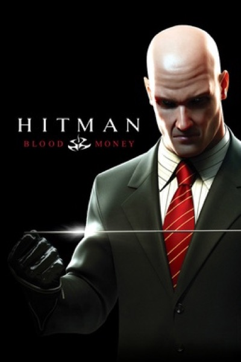

Stealth · 2006
Hitman: Blood Money
Sandbox assassination with a sense of humour about its own accidents.

Cover: Wikipedia: Hitman: Blood Money
Facts
- Released
- 2006-05-26
- Genre
- Stealth
- Category
- Stealth
- Platforms
- Mobile, Nintendo, PC, PlayStation, Xbox
- Developers
- Feral Interactive, IO Interactive
- Publishers
- Eidos Interactive
PC requirements
- Minimum
- [object Object]